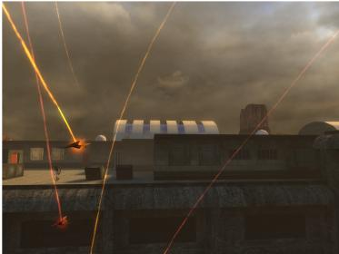

Delete.
Hopefully this appeases those who are complaining about the scene…at least this solution maintains realism, though it destroys any chance of using the cool reverse satchel trick you used in the video.
To clarify, it’s like 50/50 blended roads to “elevated” roads in D-F. Note that only the GUTTERS of some of the roads in D-F are elevated like your map. If you look at the actual roads themselves, they are ALWAYS AT THE LEVEL of the desert terrain whereas yours are slightly elevated. Again, a fix here would look nice and add to the consistency of the integrated maps but this is by no means a dealbreaker so I’m not gonna bring this up anymore.
Keep working at it…you’re very close.
Not so sure about the placebo thing. I did get several more crashes at random places than before…think Eli just complained about the stability issue too. Note that I tested previously w/the unlinked version, though I’m not sure why this would even matter.
You know after several playthroughs, I always thought that the corpse was a product of the tank battle rather than the airstrike. Perhaps adding more corpses would change that.
Tis true…I did notice this trick in the playthrough. Here’s an easy solution: delete the traffic light by the door. There are already two by the control panel which turn green to encourage the player to search for the light by the hut. This way, it actually makes sense to keep blue door locked to the player…if it were unlockable, Barney’s animation could potentially look stupid (if player opened it before him).
The only issue that I’d still recommend you fix is getting the garg to patrol properly when the player is in the long section of the reservoir (not the pool). He did this PROPERLY in the previous release but now moves in a very small circle by the radar tower. Actually in general, he patrolled much better in the previous release, at least until you get on and off the strike tower.
Regarding this and other issues like soundscaping the tunnel or adding more destructible debris that myself and others have brought up, there’s no reason NOT to make these changes. You’ve already changed this area SIGNIFICANTLY and for the better…why not improve the rest of it?
New issues that have cropped up:
General
Since I started testing you maps, I get the purple/black checkerboard frequently during loading screens.
Did you change the sound effects for the MP5 and/or shotgun when the HECU are using it? If so, revert back to BMS effects.
Garage
If you add a spawn on the third floor, have them teleport in once the player gets to this level. Otherwise, why wouldn’t they help kill the HECU? 2 vorts and an Agrunt should work.
TOW courtyard
Adjust the HECU positions somewhat…you currently have too many of them in hiding spots such that if you engage from w/in the carshop, you can’t kill them all. This doesn’t make much sense as why would the hidden HECU not help their buddies when they are being shot at?
Osprey/LAV courtyard
Recolor the Harrier landing gear to accurately reflect the Harrier….currently, the gear looks like a black/white candy cane (see image).
If you follow the manta chasing the harrier, you will see it insta-disappear. I noticed this before but decided to bring it up now as others have complained about it.
LAV looks better when it’s further out of the silo tunnel.
Rooftop
There’s a real ugly-ass “building” that’s visible now which wasn’t in the previous version (see image). It looks like a cheap Costa Rican house w/sheet metal held together by a blue forcefield. Delete or change it to look like the hangar rooftop.
Gasworks
Delete the down arrow on the “security room” logo above the door and re-center the logo. Direction arrows are only used on signs if the destination is far away.
Delete the traffic light by the Barney door.
Hangar door to exit the gasworks feels a little buggy. It will autoclose after a while but if the player opens it, it seems to remain open. The door should either autoclose all the time now w/a shorter time to closure or the button should be able to BOTH open and close the door. This could improve game performance somewhat. Also, add a black line in the center of the arch to show where the door retracts to. Do this for the door in the TOW courtyard as well.
Garg chase
The garg entrance should happen when the player actually DROPS from the pipe. Currently, the script can trigger when you are still in the pipe. You can hear the garg coming out and the marines reacting to it, but the silo door is still intact. Then when you drop down, the garg appearance gets kinda messed up.
I also wanted to quickly address some of the community feedback because, to be honest, some of it is lame and would actually worsen the mod rather than improve it.
Impaled marine in garage
If this is placed above the jump pad, it would perhaps discourage the player to use it, as it’s the very first pad they encounter in game.
Indestructible grate by sniper
This is simply stupid because 1) all previous snipers are killable 2) indestructible grate is confusing because it’s far away, hard to see and has never been introduced before so players will still waste RPG 3) you eliminate gameplay variety (reduced the options from kill or avoid to just avoid)
Lack of alien diversity
Unfounded criticism that doesn’t account for a realistic playthrough of the new ST. Text’s sections only add ~15% to the chapter…there’s lots of diverse shit in earlier sections of ST and FaF. The new sections are about the alien military so vort/Agrunt is the only logical spawn.
More ammo or health
Health should NEVER be given when players are close to 100. Placement should cater to player’s NEEDS not wants. Keeping health low also forces the player to play smarter and in this case, watch Text’s scripts which are very important for storytelling.
Ammo should be kept sparse here because of the armory in C2A5F. The player would be perfectly fine w/o ANY placements period because of the armory and the hornet gun. If you give them too much shit, you are again eliminating a gameplay element…this time resource budgeting and potentially encouraging script breaking (explosives/uranium).
The curious player will explore all areas irregardless if you give them stuff.
Too much smoke in tank battle
You don’t miss anything…the tank and the marines appear after the smoke starts clearing and are perfectly visible. If you have a problem, just move away from the wall.
Garg not killing all marines
Why is this a problem? It looks really cool that the marine is attacking it. Also, you are the 1st thing it sees, and it following/prioritizing you seems like it’s intelligent and responding to motion.

not sure if throwing another post in the pit is useful, since Textfam can’t read or address at them at once, but did any of you guys experienced any heavier bugs /glitches and crashes in the latest version ?
That was the case for me, the annoying things-go-through-the-ground glitch is there for me, sometimes I wasn’t able to fire my weapon and had severe fps drops before crashes, particulary in scenes with scripted sequences, such as the Osprey-explosion or the Tank- Battle in the next Map.
I don’t know if I can address these bugs to your maps, I mean I had no problems with Black Mesa…
Well, layout wise and from the balancing point, I think you definitely nailed it!
Mdmp files appended
sorry if this has been addressed before, it’s a mess to read through all these pages… 
hl2_4104_crash_2012_11_16T19_52_26C0.mdmp (122 KB)
hl2_4104_crash_2012_11_16T19_5_4C0.mdmp (110 KB)
Hi yrr
I made yesterday a complete playthrough and I had a crash in c2a5g when I was watching from above(car park) the fight hecu/aliens in the courtyard.
In this map I had also a pop-up(I saw the leg-less zombie spawning) and a pop-out(a metal spinter has suddenly disappeared in front of me).
I had no major issues with c2a5h & c2a5i except for the fact that I have a frame loss during the massive fight in the 2nd map but I guess that most of us have this problem).
yrr,can you please tell us where you were when BM crashed.
What was happening?
Because, If I recall correctly I’m not the only tester that had a crash while he was beholding the scripted fight in the courtyard from the car park in c2a5g .
Sometimes I had only a freeze and my lappy didn’t react at all, so I had to shut down BM via taskmanager, other times it crashed without any hints. I think that was the case in c2a5g in the courtyard with the osprey and the LAV, one time in c2a5h where the Agrunt throws the Marine through the wall and the other time in c2a5h at the beginning, when the wall collapses and the battle outside begins… In Fact I haven’t come out over the part with the Manta destroying the Tank. This was also the place where my weapons failed… I wanted to shoot the HECU above with the crossbow, it played the animation and sound, but nothing happend. I switched weapons and tried with others, but the same…
Edit: Weird, now I completed a whole playthrough without any problems at all…
As for that sniper, I think one of the reasons that people have a problem with it is because there is so little cover, and unless you are very good, you most likely will be hit a few times before. Also most first time players expect to have to stand there holding the use key to turn the valve. Since player’s dont want to get hit (especially if their low on health), and seeing that there is no easy way to avoid its fire, they will automatically try to find a way to destroy it.
I suggest you add some breakable boxes in that area for cover.
I keep getting strange glitch of Abrams simply vanishing after Manta blasts it.
Does anyone else have that?
I’d like it if you added in a tiny battle between you and 1 or 2 grunts and a couple of vorts, and maybe a few Houndeyes and then have the marines come in halfway through
I feel that Houndeye’s are very underused after Blast Pit and only make a minor appearance in Questionable Ethics
And it just seems odd to me that the marines and aliens always happen to be with each other at the start of the fight
I dont know if this has been reported yet, but “your version” of Forget About Freeman bugged near entrance of the big epic battle at desert:


{kind=link}
Thundaga you’re right! This has to be fixed too.
I hate to say, but I have to disagree with you here. Remember some of us use a customized skill configuration file ramping up the game play by about a factor of 4 or so in terms of difficulty (over hard) the ammunition/health placement is perfect as it is from my standpoint. There’s no need to detract from it as it stands. Besides, it never hurts to have a few extras laying around for emergencies (after a huge fire fight that took out most of your health for instance).
Uranium is scarce on his maps, you can only initially carry 100 cells, and anyone with a brain would use the tau instead of the RPG to nail the osprey on the previous map. If you bother to carry all of the Uranium from the armory through the hole and into the air field there (that is provided you have the patience to do that), then yes you’ll be at full. But you only get 40 additional cells out of the two boxes at the end of Text’s maps.
Besides some players are not as skilled as some of us at playing BM, so there’s another reason for keeping the placements.
Edit: If you really are curious about how much the Alien Grunts with my customized config can tank; look at it this way: on normal they can take 8 shotgun shells to the exposed area on their chest. A little over 45 MP5 rounds (excluding grenades), and in some cases if you hit them in the wrong place they can tank a fully charged Tou shot. THAT is what I have to deal with…
have to agree with chicken on the health went through on hard health didn’t drop below 75. and I suck at this game.
also think the security area you find the guard needs to look more well like the area, you have conflicting parts in it with high tech computers in one corner and low tech in the other. also think there should be some dead gaurds in there.
TextFam, I found an example in BM that fits beautifuly on what you can do to overhaul the main gate and the security booth in C2A5H. It is in the map C2A5D, near the tank you should destroy next the garage area. I strongly recommend you to check that design for yourself, to see how it was made in BM and see if something similar could be included on your map.
The only thing which will be needed to implement this design is to kill that little-hidden-door inside the booth, to make room for the gate slide to the sides. Maybe a few cosmetics redesigns will be needed on the internal area (between the booth and the snark vent), to gave it a more “maintenance area” feeling and justify their purpose there.
See some screenshots of the booth/gate:
{kind=link}
{kind=link}
{kind=link}
{kind=link}
{kind=link}
{kind=link}
I suppose I could do that, yeah. It’s a bit of a shame to see that little guard door going though, but never mind. I liked that side door. But, you’re right, a big sliding door just makes MORE sense.
Someone commented this on my youtube video and I fixed it the moment I read it. It wasn’t really my fault that it was like that way (I hadn’t changed ANYTHING gameplay wise about FaF)- decompiling maps breaks areaportals and occluders. I thought I’d rebuilt all of the areaportals on the map, but it turns out I missed that one. I’ve rebuilt it so the next version that one will be fine.
Pertaining to the balance debate, I’ll think about it. I’d quite like to have a few hidden goodies but obviously having hidden stashes means making the ones which are more obvious less useful, otherwise there’ll be too much stuff. We’ll see. I’ve been working on overhauling the parking complex at the start of C2A5G and it’s looking real good now.
^ I’d have to say hold off on fixing the Harrier take off till you’re done with everything else. Never know if you’ll do another major revision of the map and break it again. Just saying. Over all, despite being a beta, hell of a job. I look forward to further iterations. 
I’ve found an exploit that allows to avoid completely the steam puzzle in c2a5h.
Don’t know if you aware of it but you should move away that vehicle.
Youtube video:https://www.youtube.com/watch?v=opiY1wVJkAw&feature=youtu.be
Edit: I’ve just used crouch-jump.
Using crouch-jump+sprint or tau-jump you can really breeze through this part of your map.
That’s why I suggest you to move that vehicle really far from its current position.
I’d say leave the guardhouse access in. The big door opening is a good idea too, so I want to have options. Unlock both, since they lead to more or less the same place. If it’s a two part door that opens out like the existing BM ST map, try making one side not open with some sparks as visual feedback to communicate both the damaged nature of the facility and help prevent the door from clipping through the security camera.
As for Conti’s idea on a stairwell, I’d hold off on that and just let players use the truck’s hood to scale the wall. Or: change the truck’s facing 180 degrees and put some crates behind it to let the player scale the wall. Add marine corpses inside the room as well to make it look like they were slaughtered while trying to load supplies up for the retreat.
I can’t leave the guardhouse access there, because the walkway extending out from the guardhouse cuts into the space where the door would open. It wouldn’t make any sense - the right door wouldn’t have any space to open. Even if I made it so the right door jammed and didn’t open, the player would still wonder how it’s physically possible, because it wouldn’t have any space to physically open anyway.
How much more cover do you need man?! There’s already 3 pick-upable barrels directly in front of you thats positioned RIGHT IN THE SNIPER’S LINE OF SIGHT! Also, the sniper’s accuracy is shit. Just strafe and you never get hit.
There’s a pack of houndeyes in early ST. There’s many houndeyes in LC. There WILL BE many houndeyes in Xen and interloper. How many houndeyes do you really need? Also it’s unclear what the houndeye’s relationship is to the vorts…are they their attack dogs or are they hostile to them? You can potentially affect canon w/these changes.
This is BY FAR the weakest argument you could possibly make regarding ammo/health placements. Simply put, the placements must ALWAYS be balanced to the default .cfg and NEVER to some guy’s custom .cfg. The difficulty vs enemies is your problem alone…millions of others use the regular settings.
Uranium facilitates script breaking though…that’s why it should be placed AFTER the tank because the players need to see the scripts to understand why the HECU are pulling out. Even the shittiest players will do just fine w/a slightly slimmer health placement if they use the regular HARD .cfg.
Text, here’s my theory for why performace is crappier in this version of ST: it’s your new jump pads. The areas w/the worst decline in performance/crashes are the garage and outside area and the tank battle…both have the pads. Maybe the problem stems from a physics error?
The response was a little hostile, but as I said, I just disagree with you. Even if players don’t often modify the .cfgs doesn’t mean that there isn’t those who do (i.e. me). Half the time I usually reload from an earlier save if I took too much damage that I’m comfortable with from a fire fight. So far it’s just you who’s been piping up about it. If anything they need to be spaced out more, it’ll make it seem they’re sparser while keeping the usual stuff. I do agree with you in the Uranium and heavy weapons (explosives) department. It should be sparse.
If you must continue to bring it up, he is adding in more NPCs for the player to go toe-to-toe with. That’s a good reason to hold off on removing supplies until another release, balance will have changed.